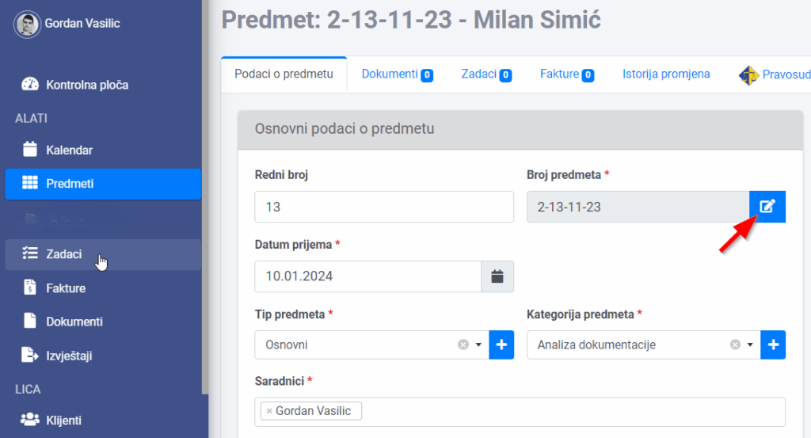

U podešavanjim za kancelariju, pod karticom “Sistemska podešavanja” možete definisati šablon za broj predmeta i fakture.

Ovdje možete prilagoditi izgled broja predmeta, kakav vama odgovara i koji već koristite u kancelariji.
Primjer: #
Ako želite da vam, na primjer, broj predmeta bude oblika: 1-10/23, gdje je 1 redni broj predmeta, 10 je mjesec, i 23 godina, obrišite trenutni šablon i klikom na plava predefinisana polja, odredite šablon za broj predmeta, kao u primjeru ispod:
Šablon se može promjeniti i iz samog predmeta (nije bitno koji je predmet u pitanju, šablon će se primjenjivati na sve predmete):

Isti je princip i za šablon broja fakture.